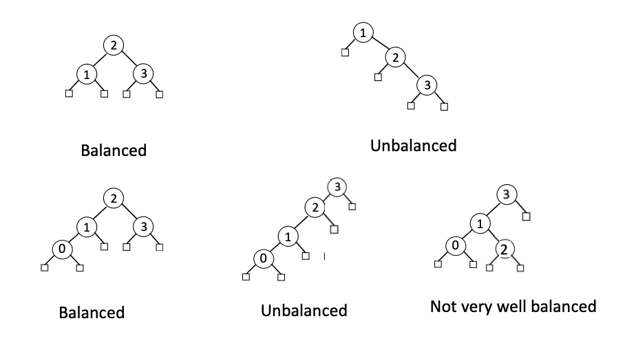

5 Balanced Search Trees and other Types of Trees
Balanced Search Trees
- Motivation: As seen before, in the worst case, time complexity of a search tree can be up to \(\mathcal{O}(n)\). To optimize the time complexity, we need to balance the tree.
- Balanced Search Trees Examples: 
- Note: until now, we have not defined what a balanced search tree is. We will define it in the next section.
AVL Trees
AVL Trees are a type of balanced search trees such that every internal node v is height balanced, namely the heights of the children of v can differ by at most 1.
- Therefore, AVL trees are balanced.
- Note: heights of the children means the heights of subtrees rooted at the children.Fact: The height \(h\) of an AVL tree storing \(n\) nodes is \(\mathcal{O}(\log n)\).
Proof (by induction): Let define \(n(h)\), the minimum number of internal nodes of an AVL tree of height \(h\).
Base Case: We easily see that \(n(1)=1\) and \(n(2)=2\).
Inductive Steps: For \(n>2\), an AVL tree of height \(h\) contains the root node, one AVL subtree of height \(h-1\) and another height \(h-2\).
That is, \(n(h)=1+n(h-1)+n(h-2)\).
Knowing \(n(h-1)>n(h-2)\), we get \(n(h)>2n(h-2)\)
So, we have \(n(h)>2n(h-2), n(h)>4n(h-4),\dots,n(h)>2^in(h-2i)\)
Solving the base case, (i.e., \(h-2i=1\)), we get \(n(h)>2^{h/2-1}\).
Taking logarithms: \(h<2\log n(h)+2\)
Thus, the height of an AVL tree is \(\mathcal{O}(\log n)\). \(\qquad\blacksquare\)Insert in AVL Tree:
- After inserting, we need to check if the tree is still height balanced. If not, we need to perform rotations to balance the tree.
- To perform rebalancing, we need to:
- Step 1: Identify the tri-nodes. Unbalanced subtree root, its taller child, and its taller grandchild.
- Step 2: Execute tri-nodes restructure.
Delete in AVL Tree:
- After deleting, we need to check ALL the ancestors of the deleted node to see if the tree is still height balanced. If not, we need to perform rotations to balance the tree.
- Sometimes, we need to perform multiple rotations to balance the tree.
- When selecting the trinodes, we will use a higher subtree. Pulling up a higher subtree gives us a higher chance to rebalance the tree.
public AVLTree<K,V> extends BinarySearchTree<K,V> {
// ... We will redefine the Node class to include the height of the node.
// This way, we fasten the speed of computing the height.
protected static class Node<E> {
public E element;
public int height = 0;
public Node<E> parent;
public Node<E> left;
public Node<E> right;
public Node(E e, Node<E> above, Node<E> leftChild, Node<E> rightChild) {
element = e;
parent = above;
left = leftChild;
right = rightChild;
}
}
// method to update the height of a node
protected void recomputeHeight(Node<Entry<K,V>> p) {
p.height = 1+ Math.max(p.left.height, p.right.height);
}
// The rebalancing method
protected void rebalance(Node<Entry<K,V>> p) {
int oldHeight, newHeight;
do { // Scan potential unblanced nodes from the deleted one up to the root
oldHeight = p.height;
if (Math.abs(p.left.height - p.right.height) >= 2) {
// if the current nodes' subtree is unbalanced
p = resructure(tallerChild(tallerChild(p))); // identify the tri-nodes and restructure
// Update the height of the nodes
// These two are the only two nodes with height changed.
recomputeHeight(p.left);
recomputeHeight(p.right);
}
recomputeHeight(p); // update height
newHeight = p.height;
p = p.parent;
} while (oldHeight != newHeight && p != null);
// Stopping condition:
// 1. The height of the current node does not change
// (if the height changed, it could cause further unbalance and we need to further scan toward the root)
// 2. Reach the root so stop
}
// Helper method: finding the taller child of a node
protected Node<Entry<K,V>> tallerChild(Node<Entry<K,V>> p) {
if (p.left.height > p.right.height) return p.left; // clear winner
else if (p.left.height < p.right.height) return p.right; // clear winner
else { // tie
if (isRoot(p)) return p.left; // choice is irrelevant
if (p == p.parent.left) return p.left; // return aligned child
else return p.right;
}
}
// With the restructure method, we can perform the balanced insertion and deletion.
public void insert(K key, V value) {
// same as before
Node<Entry<K,V>> p = treeSearch(root, key);
if (isExternal(p)) {
Entry<K,V> entry = new Entry<>(key, value);
expandExternal(p, entry);
} else {
p.element.value = value;
}
rebalance(p); // new!!
}
public void delete(K key) {
// same as before
Node<Entry<K,V>> p = treeSearch(root, key);
if (isInternal(p)) {
if (isExternal(p.left) || isExternal(p.right)) {
deleteHelper(p);
} else {
Node<Entry<K,V>> replacement = treeMax(p.left);
p.element = replacement.element;
deleteHelper(replacement);
}
}
rebalance(p.parent); // new!!
}
}- Time Complexity of AVL Tree Operations:
- Insertion: \(\mathcal{O}(\log n)\)
- Deletion: \(\mathcal{O}(\log n)\)
- Search: \(\mathcal{O}(\log n)\)
- Note: The time complexity of AVL tree operations is \(\mathcal{O}(\log n)\) because the height of an AVL tree is \(\mathcal{O}(\log n)\).
Splay Trees
- Motivation: We want to optimize the time complexity of search operations. That is, we want to make the most frequently accessed nodes to be closer to the root.
Definition 1 A Splay tree is a binary search tree with the following intention: more frequently accessed elements to remain nearer to the root. Thereby, we reduce the typical search times.
- How to splay?
- To splay a node, we need to perform a sequence of rotations to bring the node to the root.
- We will identify the tri-nodes and perform rotation operations accordingly.
private void splay(Node<Entry<K,V>> p) {
while (!isRoot(p)) {
// Situation 3: two-node rotation
if (p.parent.parent == null) {
rotate(p);
break;
}
// Situation 2: tri-node straight line
if ((p.parent.left == p) ==
(p.parent.parent.left == p.parent)) {
rotate(p.parent);
rotate(p);
}
// Situation 1: tri-node zig-zag
else {
rotate(p);
rotate(p);
}
}
}- When to splay?
- Recall that we want to splay the most frequently accessed nodes to be closer to the root.
- When
search(), which node to splay?- Situation 1: If the key is found, we splay the node we found.
- Situation 2: If the target key is not found, we splay the last node we visited.
- When
insert(), which node to splay?- We splay the node we inserted.
- When
remove(), which node to splay?- We splay the parent of the removed node.
public void accessSplay(K key) {
Node<Entry<K,V>> p = treeSearch(root, key);
// Situation 1: If the key is found, we splay the node we found.
if (!isExternal(p)) {
splay(p);
}
// Situation 2: If the target key is not found, we splay the last node we visited.
else {
if (p.parent != null) splay(p.parent);
}
}
public void insertSplay(K key, V value) {
// same as before
split(p);
}
public void deleteSplay(K key) {
// same as before
splay(p.parent);
}2-4 Trees
- Generalize Binary Search Tree to Multiway Search Tree
- A d-node is a node with d children.
- A multiway search tree is a tree
- Each internal node has at least two children: a d-node where \(d\geq2\).
- Each internal d-node \(w\) stores an ordered set of \(d-1\) key-value pairs: \((k_1,v_1),\dots,(k_{d-1},v_{d-1})\), where \(k_1\leq\cdots\leq k_{d-1}\). They separate all the \(d\) children \(c_1,\dots,c_d\).
- For each entry \((k,v)\) stored at a node in the subtree of \(w\) rooted at \(c_i\), \(i=1,\dots,d\), we have that \(k_{i-1}\leq k\leq k_i\).
- External nodes are dummy nodes.
- A (2,4)-Tree is a special type of multiway search tree with the following additional properties:
- Size property: every internal node has at most four children.
- Depth property: all the external nodes have the same depth.
- Property of a (2,4)-Tree: The height of a (2,4) tree storing \(n\) entries is \(\mathcal{O}(\log n)\).
Proof \(\quad\) As we aim at the worse case situation, we are interested in the “slimmest” situation of the tree, meaning when each node has only two children, where we have:
\[\text{number of entries:}\quad2^0+2^1+\cdots+2^{h-1}=2^h-1.\] So, \[2^h-1\leq n\implies h\leq\log(n+1).\qquad\blacksquare\]